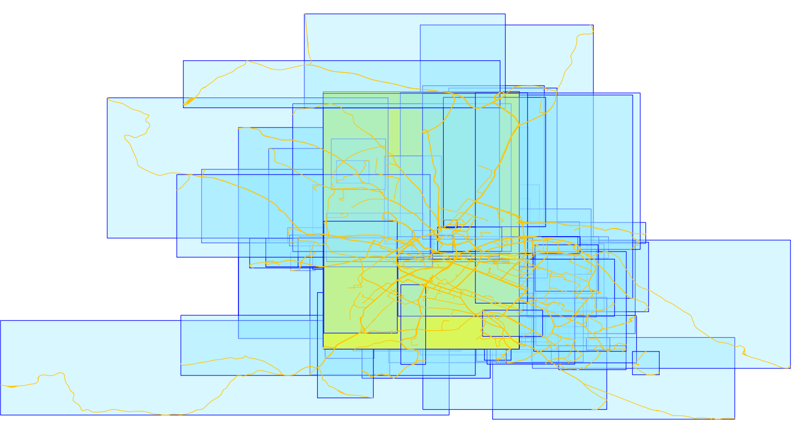

MAGDa - Management und Analyse Geotemporaler Daten
Querying point or line-based trajectories in PostGIS. Which model is faster?
Posted am 19.05.2018This post comments on one of the latest editions of Anita Graser's series 'Movement data in GIS' where she blogs about different ways to model, query and visualize trajectory-based data. In her 12th episode she demonstrate the difference in query performance when accessing properties of trajectories managed as points versus linestrings. The taken examples clearly show what are the benefits of the LineString-based approach. While I also store my tracking data as linestrings, I thought that the queries chosen for point-based data are not written in the best way. Therefore, I tried to create alternative queries to see if the performance gap is really this huge.
TL;DR It is not. But, trajectories have indeed clear advantages over a point-based approach.
Generally, movement data is collected as a series of single locations connected by a sequence ID. When imported into a database, each detection is stored in a new table row. This works with most DBMS, especially when the longitude and latitude position is split up to separate columns and you don't need a geometry type. If one track is comprised of multiple rows in a database table properties such as the length of the track or the travel time etc. can not be queried so easily, e.g. for the length we would have to sum up the distances between all positions. Life gets easier when we choose a model that lets us represent each trajectory as one row in a table. For example, all points could make up a LineString. The temporal boundaries could be arranged as two columns. When using PostGIS, we have the ability to use the M dimension of a geometry, to store a unix timestamp along with each vertex.
In my example, I use two tables that have a different layout than in Anita's example. I got a taxi data set from the city of Dresden which I have map matched with Graphhopper and processed with fcd2pgsql - see also this blog entry. I have one table matched_tracks that only contains taxi trips with a passenger. The table contains over 2 million rows (also because fcd2pgsql creates a new trip whenever there is a spatial of temporal gap in the original track).
The matched_tracks table has four columns and a spatial index on the spatial column.
| id | start_time | end_time | geom |
| int | timestamp without time zone | timestamp without time zone | geometry(LineStringZM,4326) |
Working with LineStringZM is a lot of fun when you discover the PostGIS functions for linear referencing such as ST_LineLocatePoint, ST_LineSubstring or ST_LocateBetween. I won't cover it here but I'll give a talk on this topic at the FOSS4G in Dar-Es-Salaam. As I have map matched my taxi dataset against OpenStreetMap I wanted to calculate the average speed for each OSM way. At first, I used my linear referencing queries, but they weren't fast enough. That's why I dumped all my LineStrings into a point representation to get queries executing in a few milliseconds. The point table (fcd_matched) has the following columns with over 178 million entries.
| id | trip_id | idx | longitude | latitude | speed | time | geom |
| bigint | int | int | double precision | double precision | bigint | int | geometry(Point,4326) |
These are the indexes I've defined:
CREATE INDEX trip_idx ON fcd_matched USING btree (trip_id, idx);
CREATE INDEX fcd_matched_time_idx ON fcd_matched USING btree ("time");
CREATE INDEX fcd_matched_spx ON fcd_matched USING gist (geom);
Calculate the length of trajectories
Enough explanation! Let's walk through the different examples. First query: Get the length of a trip.
WITH ordered AS (
SELECT trip_id, time, geom
FROM fcd_matched
ORDER BY time
), tmp AS (
SELECT trip_id, st_makeline(geom) traj
FROM ordered
GROUP BY trip_id
)
SELECT trip_id, round(sum(ST_Length(traj::geography)))
FROM tmp
GROUP BY trip_id
ORDER BY trip_id;
This is how the execution plan looks like on my machine:
"GroupAggregate (cost=33814018.47..33814072.97 rows=200 width=12) (actual time=705533.776..1017992.822 rows=2289480 loops=1)"
" Group Key: tmp.trip_id"
" CTE ordered"
" -> Gather Merge (cost=7837533.73..29363686.71 rows=178012705 width=44) (actual time=59223.921..301730.134 rows=178012704 loops=1)"
" Workers Planned: 5"
" Workers Launched: 5"
" -> Sort (cost=7836533.65..7925540.01 rows=35602541 width=44) (actual time=59136.681..79241.458 rows=29668784 loops=6)"
" Sort Key: fcd_matched."time""
" Sort Method: external merge Disk: 1609752kB"
" -> Parallel Seq Scan on fcd_matched (cost=0.00..2729528.41 rows=35602541 width=44) (actual time=0.185..40903.514 rows=29668784 loops=6)"
" CTE tmp"
" -> HashAggregate (cost=4450317.62..4450320.12 rows=200 width=36) (actual time=616145.980..673785.168 rows=2289480 loops=1)"
" Group Key: ordered.trip_id"
" -> CTE Scan on ordered (cost=0.00..3560254.10 rows=178012705 width=36) (actual time=59223.929..426764.700 rows=178012704 loops=1)"
" -> Sort (cost=11.64..12.14 rows=200 width=36) (actual time=705527.615..712634.172 rows=2289480 loops=1)"
" Sort Key: tmp.trip_id"
" Sort Method: external merge Disk: 2898688kB"
" -> CTE Scan on tmp (cost=0.00..4.00 rows=200 width=36) (actual time=616145.993..689409.554 rows=2289480 loops=1)"
"Planning time: 0.440 ms"
"Execution time: 1025397.352 ms"
It takes around 17 minutes. Also because the table is too big to sort in memory. I would need to extend the work_men up to gigabytes. We could move the ORDER BY into the ST_MakeLine function to reduce the amount of sorted rows.
SELECT
trip_id,
round(ST_Length(ST_MakeLine(geom ORDER BY time)::geography))
FROM
fcd_matched
GROUP BY
trip_id;
"GroupAggregate (cost=0.57..6585923.10 rows=42688 width=12) (actual time=0.565..601789.110 rows=2289480 loops=1)"
" Group Key: trip_id"
" -> Index Scan using trip_idx on fcd_matched (cost=0.57..5684440.54 rows=178012704 width=44) (actual time=0.068..137149.383 rows=178012704 loops=1)"
"Planning time: 0.182 ms"
"Execution time: 602404.807 ms"
10 minutes. Not exactly sure how much time is spent on putting the linestring together. When I use a simple count() instead it takes 24 seconds to run the query. I wonder if creating a line is really necessary. It's also possible to calculate the length from a set of points using a window function.
SELECT
trip_id,
sum(distance)
FROM (
SELECT trip_id, idx,
ST_Distance(
geom::geography,
lead(geom::geography, 1) OVER (PARTITION BY trip_id ORDER BY idx)
) AS distance
FROM fcd_matched
) d
WHERE distance IS NOT NULL -- optional filter
GROUP BY trip_id;
With the lead function I shift the window by 1 position, so that I can calculate the distance between each point. I partition the lead window by trip_id and sort the partitions by the point index. This produces the following intermediate result.
trip_id | idx | geom | lead(geom, 1)
--------+------+------+--------------
1 | 1 | pt1 | pt2
1 | 2 | pt2 | pt3
1 | ... | ... | ...
1 | 6 | pt6 | NULL
2 | 1 | pt1 | pt2
2 | 2 | pt2 | pt3
2 | ... | ... | ...
Postgres does not allow to nest window functions so I sum up the distance values in the main query. Let's look at the plan:
"GroupAggregate (cost=0.57..56859069.50 rows=42688 width=12) (actual time=6.018..1257482.709 rows=2289480 loops=1)"
" Group Key: d.trip_id"
" -> Subquery Scan on d (cost=0.57..55973029.42 rows=177122640 width=12) (actual time=5.895..1182934.098 rows=175723224 loops=1)"
" Filter: (d.distance IS NOT NULL)"
" Rows Removed by Filter: 2289480"
" -> WindowAgg (cost=0.57..54192902.38 rows=178012704 width=16) (actual time=5.894..1125864.122 rows=178012704 loops=1)"
" -> Index Scan using trip_idx on fcd_matched (cost=0.57..5684440.54 rows=178012704 width=40) (actual time=3.881..182993.321 rows=178012704 loops=1)"
"Planning time: 2.757 ms"
"Execution time: 1258156.701 ms"
Over 20 minutes! Didn't know that a window with partitioning can be this expensive. Hm, did I get something totally wrong? Let's check how much faster it is with trajectories:
SELECT ST_Length(geom::geography) FROM matched_tracks;
"Seq Scan on matched_tracks (cost=0.00..1116915.36 rows=2289129 width=8) (actual time=3.772..353470.769 rows=2289480 loops=1)"
"Planning time: 1.020 ms"
"Execution time: 353904.919 ms"
Result: Trajectories win! Nearly 6 minutes compared to 10 or 20.
Calculate the duration
Ok, next query the duration of trips. Therefore, we only need to know the boundary of a track a.k.a. the first and the last point. So, with the aggregate functions min and max this should work properly. Don't know exactly, why there is a sum. Without it its 5 secs faster.
WITH tmp AS (
SELECT trip_id, min(time) start_time, max(time) end_time
FROM fcd_matched
GROUP BY trip_id
)
SELECT trip_id, sum(end_time - start_time)
FROM tmp
GROUP BY trip_id;
"HashAggregate (cost=3041833.75..3041836.25 rows=200 width=36) (actual time=34887.094..35831.580 rows=2289480 loops=1)"
" Group Key: tmp.trip_id"
" CTE tmp"
" -> Finalize GroupAggregate (cost=3038107.74..3040662.72 rows=42583 width=20) (actual time=30252.174..32269.142 rows=2289480 loops=1)"
" Group Key: fcd_matched.trip_id"
" -> Sort (cost=3038107.74..3038640.03 rows=212915 width=20) (actual time=30252.138..31297.293 rows=4528696 loops=1)"
" Sort Key: fcd_matched.trip_id"
" Sort Method: external merge Disk: 150720kB"
" -> Gather (cost=2997547.52..3019264.85 rows=212915 width=20) (actual time=26098.269..27859.473 rows=4528696 loops=1)"
" Workers Planned: 5"
" Workers Launched: 5"
" -> Partial HashAggregate (cost=2996547.52..2996973.35 rows=42583 width=20) (actual time=26073.120..26374.407 rows=754783 loops=6)"
" Group Key: fcd_matched.trip_id"
" -> Parallel Seq Scan on fcd_matched (cost=0.00..2729528.44 rows=35602544 width=12) (actual time=0.221..19064.374 rows=29668784 loops=6)"
" -> CTE Scan on tmp (cost=0.00..851.66 rows=42583 width=20) (actual time=30252.186..33126.235 rows=2289480 loops=1)"
"Planning time: 3.924 ms"
"Execution time: 35995.855 ms"
36 seconds. I tried some strange ideas (DISTINCT ON, first_value), but it was way slower. Btw. I received the plan after 30 seconds but when querying the actual data it took 5 minutes to get displayed :-O. Ok, time for trajectories again:
SELECT
id,
ST_M(ST_EndPoint(geom)) - ST_M(ST_StartPoint(geom)) AS duration_in_sec
FROM
matched_tracks;
"Seq Scan on matched_tracks (cost=0.00..567524.40 rows=2289129 width=12) (actual time=0.208..27842.437 rows=2289480 loops=1)"
"Planning time: 0.306 ms"
"Execution time: 27993.038 ms"
More or less comparable performance. The actual query took over 3 minutes to present the results.
Temporal filters
Again, I start with a query taken from Anita's blog post.
WITH tmp AS (
SELECT trip_id, min(time) start_time, max(time) end_time
FROM fcd_matched
GROUP BY trip_id
)
SELECT trip_id, start_time, end_time
FROM tmp
WHERE end_time > extract(epoch from '2014-11-26 11:00:00'::timestamp)::bigint
AND start_time < extract(epoch from '2014-11-26 15:00:00'::timestamp)::bigint
ORDER BY trip_id;
"Sort (cost=3042016.02..3042027.85 rows=4731 width=20) (actual time=31374.182..31374.330 rows=1755 loops=1)"
" Sort Key: tmp.trip_id"
" Sort Method: quicksort Memory: 186kB"
" CTE tmp"
" -> Finalize GroupAggregate (cost=3038107.69..3040662.67 rows=42583 width=20) (actual time=27996.578..30321.293 rows=2289480 loops=1)"
" Group Key: fcd_matched.trip_id"
" -> Sort (cost=3038107.69..3038639.97 rows=212915 width=20) (actual time=27996.553..29169.133 rows=4534284 loops=1)"
" Sort Key: fcd_matched.trip_id"
" Sort Method: external merge Disk: 150912kB"
" -> Gather (cost=2997547.47..3019264.80 rows=212915 width=20) (actual time=22608.546..25023.574 rows=4534284 loops=1)"
" Workers Planned: 5"
" Workers Launched: 5"
" -> Partial HashAggregate (cost=2996547.47..2996973.30 rows=42583 width=20) (actual time=22580.578..22918.325 rows=755714 loops=6)"
" Group Key: fcd_matched.trip_id"
" -> Parallel Seq Scan on fcd_matched (cost=0.00..2729528.41 rows=35602541 width=12) (actual time=0.385..15820.816 rows=29668784 loops=6)"
" -> CTE Scan on tmp (cost=0.00..1064.58 rows=4731 width=20) (actual time=28004.472..31373.531 rows=1755 loops=1)"
" Filter: ((end_time > '1416999600'::bigint) AND (start_time < '1417014000'::bigint))"
" Rows Removed by Filter: 2287725"
"Planning time: 0.836 ms"
"Execution time: 31472.068 ms"
Half a minute. The index on the time column is of no use because of the preceeding CTE which groups and sorts the entire fcd_matched table. We need to do the temporal filter first and then eliminate the trips which do not overlap with the given time window. One important note: In my database the time is stored as bigint that refers to a unix timestamp. So, in order to use the index that I've created on my time column, I have to be careful and convert the passed timestamps in the WHERE clause. Look at the second plan to see what happens otherwise.
SELECT DISTINCT
trip_id
FROM
fcd_matched
WHERE
time > extract(epoch from '2014-11-26 11:00:00'::timestamp)::bigint
AND time < extract(epoch from '2014-11-26 15:00:00'::timestamp)::bigint;
"HashAggregate (cost=122386.04..122781.32 rows=39528 width=4) (actual time=146.713..147.244 rows=1702 loops=1)"
" Group Key: trip_id"
" -> Index Scan using fcd_matched_time_idx on fcd_matched (cost=0.57..122105.65 rows=112159 width=4) (actual time=0.059..109.897 rows=144178 loops=1)"
" Index Cond: (("time" > '1416999600'::bigint) AND ("time" < '1417014000'::bigint))"
"Planning time: 0.297 ms"
"Execution time: 147.727 ms"
"HashAggregate (cost=3177785.38..3178211.21 rows=42583 width=4) (actual time=17825.688..17826.908 rows=1702 loops=1)"
" Group Key: trip_id"
" -> Gather (cost=1000.00..3175560.22 rows=890064 width=4) (actual time=125.127..17797.947 rows=144178 loops=1)"
" Workers Planned: 5"
" Workers Launched: 5"
" -> Parallel Seq Scan on fcd_matched (cost=0.00..3085553.82 rows=178013 width=4) (actual time=80.927..17789.817 rows=24030 loops=6)"
" Filter: ((("time")::double precision > '1416999600'::double precision) AND (("time")::double precision < '1417014000'::double precision))"
" Rows Removed by Filter: 29644754"
"Planning time: 1.123 ms"
"Execution time: 17943.609 ms"
Way better. But, only 1702 tracks were found instead of 1755. Turned out that some tracks actually to have temporal shifts in it - probably due to different time zones on different servers. This should not happen when using trajectories. I created a functional index on the time range of the first and last measure values of each trajectory. I could have used the start_time and end_time columns, too. But, I wanted to try if it would work only with LineStringM data.
CREATE INDEX matched_tracks_time_range_idx ON matched_tracks USING GIST (int8range(ST_M(ST_StartPoint(geom))::bigint, ST_M(ST_EndPoint(geom))::bigint));
SELECT
id
FROM
matched_tracks
WHERE
int8range(ST_M(ST_StartPoint(geom))::bigint, ST_M(ST_EndPoint(geom))::bigint) &&
int8range(extract(epoch from '2014-11-26 11:00:00'::timestamp)::bigint,extract(epoch from '2014-11-26 15:00:00'::timestamp)::bigint);
"Index Scan using matched_tracks_time_range_idx on matched_tracks (cost=0.41..25251.17 rows=22895 width=4) (actual time=0.189..4.681 rows=1374 loops=1)"
" Index Cond: (int8range((st_m(st_startpoint(geom)))::bigint, (st_m(st_endpoint(geom)))::bigint) && '[1416999600,1417014000)'::int8range)"
"Planning time: 0.227 ms"
"Execution time: 4.844 ms"
Works pretty good! But, for some reason only 1347 entries are found. Again, I found some temporal shifts, this time backwards :-/
Spatial filters
Finally, lets come to spatial queries.
WITH my AS (
SELECT ST_Buffer(ST_SetSRID(ST_MakePoint(13.73,51.04),4326),0.0005) areaA
), tmp AS (
SELECT trip_id, min(time) t
FROM fcd_matched
GROUP BY trip_id
)
SELECT distinct traj.trip_id
FROM tmp
JOIN fcd_matched traj
ON tmp.trip_id = traj.trip_id AND traj.time = tmp.t
JOIN my
ON ST_Within(traj.geom, my.areaA);
There are a lot of extra steps in the query, which I think are not necessary. It also results in a giant execution plan.
"Unique (cost=3188783.06..3188783.06 rows=1 width=4) (actual time=32451.398..32451.492 rows=515 loops=1)"
" CTE my"
" -> Result (cost=0.00..0.01 rows=1 width=32) (actual time=0.002..0.002 rows=1 loops=1)"
" CTE tmp"
" -> Finalize GroupAggregate (cost=2949101.38..2951124.07 rows=42583 width=12) (actual time=29184.909..30894.420 rows=2289480 loops=1)"
" Group Key: fcd_matched.trip_id"
" -> Sort (cost=2949101.38..2949633.67 rows=212915 width=12) (actual time=29184.898..30082.200 rows=4553400 loops=1)"
" Sort Key: fcd_matched.trip_id"
" Sort Method: external merge Disk: 115912kB"
" -> Gather (cost=2908541.16..2930258.49 rows=212915 width=12) (actual time=24987.031..26715.202 rows=4553400 loops=1)"
" Workers Planned: 5"
" Workers Launched: 5"
" -> Partial HashAggregate (cost=2907541.16..2907966.99 rows=42583 width=12) (actual time=24921.662..25200.262 rows=758900 loops=6)"
" Group Key: fcd_matched.trip_id"
" -> Parallel Seq Scan on fcd_matched (cost=0.00..2729528.44 rows=35602544 width=12) (actual time=0.406..18266.849 rows=29668784 loops=6)"
" -> Sort (cost=237658.97..237658.98 rows=1 width=4) (actual time=32451.397..32451.423 rows=518 loops=1)"
" Sort Key: traj.trip_id"
" Sort Method: quicksort Memory: 49kB"
" -> Hash Join (cost=235103.97..237658.96 rows=1 width=4) (actual time=29597.167..32450.712 rows=518 loops=1)"
" Hash Cond: ((tmp.trip_id = traj.trip_id) AND (tmp.t = traj."time"))"
" -> CTE Scan on tmp (cost=0.00..851.66 rows=42583 width=12) (actual time=29184.919..31679.024 rows=2289480 loops=1)"
" -> Hash (cost=234213.90..234213.90 rows=59338 width=12) (actual time=404.379..404.379 rows=24161 loops=1)"
" Buckets: 65536 Batches: 1 Memory Usage: 1645kB"
" -> Nested Loop (cost=2768.38..234213.90 rows=59338 width=12) (actual time=85.885..390.246 rows=24161 loops=1)"
" -> CTE Scan on my (cost=0.00..0.02 rows=1 width=32) (actual time=0.005..0.007 rows=1 loops=1)"
" -> Bitmap Heap Scan on fcd_matched traj (cost=2768.38..233620.50 rows=59338 width=44) (actual time=85.860..383.850 rows=24161 loops=1)"
" Recheck Cond: (my.areaa ~ geom)"
" Filter: _st_contains(my.areaa, geom)"
" Heap Blocks: exact=12188"
" -> Bitmap Index Scan on fcd_matched_spx (cost=0.00..2753.55 rows=178013 width=0) (actual time=84.057..84.057 rows=24161 loops=1)"
" Index Cond: (my.areaa ~ geom)"
"Planning time: 145.486 ms"
"Execution time: 32515.354 ms"
Why not using ST_DWithin instead of ST_Buffer and ST_Within. Yes, I know that it can be faster sometimes. The tmp CTE could be removed as well because DISTINCT is also used in the final query. So I came up with the following:
SELECT
DISTINCT trip_id
FROM
fcd_matched
WHERE
ST_DWithin('SRID=4326;POINT(13.73 51.04)'::geometry(Point, 4326), geom, 0.0005);
"Unique (cost=36853.40..36863.57 rows=1987 width=4) (actual time=93.814..98.439 rows=12233 loops=1)"
" -> Sort (cost=36853.40..36858.49 rows=2035 width=4) (actual time=93.812..95.387 rows=24161 loops=1)"
" Sort Key: trip_id"
" Sort Method: quicksort Memory: 1901kB"
" -> Gather (cost=1473.12..36741.57 rows=2035 width=4) (actual time=15.483..85.794 rows=24161 loops=1)"
" Workers Planned: 4"
" Workers Launched: 4"
" -> Parallel Bitmap Heap Scan on fcd_matched (cost=473.12..35538.07 rows=509 width=4) (actual time=3.130..38.088 rows=4832 loops=5)"
" Recheck Cond: (geom && '0103000020E610000001000000050000002FDD240681752B40931804560E8549402FDD240681752B4077BE9F1A2F854940BD74931804762B4077BE9F1A2F854940BD74931804762B40931804560E8549402FDD240681752B40931804560E854940'::geometry)"
" Filter: (('0101000020E6100000F6285C8FC2752B4085EB51B81E854940'::geometry(Point,4326) && st_expand(geom, '0.0005'::double precision)) AND _st_dwithin('0101000020E6100000F6285C8FC2752B4085EB51B81E854940'::geometry(Point,4326), geom, '0.0005'::double precision))"
" Heap Blocks: exact=8615"
" -> Bitmap Index Scan on fcd_matched_spx (cost=0.00..472.61 rows=30528 width=0) (actual time=11.218..11.218 rows=24161 loops=1)"
" Index Cond: (geom && '0103000020E610000001000000050000002FDD240681752B40931804560E8549402FDD240681752B4077BE9F1A2F854940BD74931804762B4077BE9F1A2F854940BD74931804762B40931804560E8549402FDD240681752B40931804560E854940'::geometry)"
"Planning time: 0.562 ms"
"Execution time: 99.698 ms"
(It's the same speed with ST_Within(geom, ST_Buffer('SRID=4326;POINT(13.73 51.04)'::geometry(Point, 4326), 0.0005)) , btw.). Finally, let's try a spatial queries with my trajectories. I've created a simple spatial index on the geom column.
SELECT
id
FROM
matched_tracks
WHERE
ST_DWithin('SRID=4326;POINT(13.73 51.04)'::geometry(Point, 4326), geom, 0.0005);
"Index Scan using matched_tracks_spx on matched_tracks (cost=0.41..1228.82 rows=59 width=4) (actual time=0.847..4028.084 rows=12233 loops=1)"
" Index Cond: (geom && '0103000020E610000001000000050000002FDD240681752B40931804560E8549402FDD240681752B4077BE9F1A2F854940BD74931804762B4077BE9F1A2F854940BD74931804762B40931804560E8549402FDD240681752B40931804560E854940'::geometry)"
" Filter: (('0101000020E6100000F6285C8FC2752B4085EB51B81E854940'::geometry(Point,4326) && st_expand(geom, '0.0005'::double precision)) AND _st_dwithin('0101000020E6100000F6285C8FC2752B4085EB51B81E854940'::geometry(Point,4326), geom, '0.0005'::double precision))"
" Rows Removed by Filter: 94333"
"Planning time: 0.470 ms"
"Execution time: 4029.248 ms"
OK, so the point query won by 400 times in my case. I've tested Anita's query as well, but my trajectories could not fulfill the ST_Within criteria. So, I used ST_Intersects. It's important to do the JOIN with && and not ST_Intersects(ST_StartPoint(geom), areaA) because a function is used to change the geom column. In this case the index wouldn't fire. With the data already fetched from heap it's sufficient to only check the topology, so I've used _ST_Intersects (note the leading underscore).
WITH my AS (
SELECT ST_Buffer(ST_SetSRID(ST_MakePoint(13.73,51.04),4326),0.0005) areaA
)
SELECT id
FROM matched_tracks
JOIN my
ON geom && areaA
WHERE _ST_Intersects(ST_StartPoint(geom), areaA)
"Nested Loop (cost=0.42..318.23 rows=762 width=4) (actual time=5.168..2207.322 rows=515 loops=1)"
" CTE my"
" -> Result (cost=0.00..0.01 rows=1 width=32) (actual time=0.001..0.001 rows=1 loops=1)"
" -> CTE Scan on my (cost=0.00..0.02 rows=1 width=32) (actual time=0.007..0.010 rows=1 loops=1)"
" -> Index Scan using matched_tracks_spx on matched_tracks (cost=0.41..317.44 rows=76 width=2566) (actual time=5.154..2207.171 rows=515 loops=1)"
" Index Cond: (geom && my.areaa)"
" Filter: _st_intersects(st_startpoint(geom), my.areaa)"
" Rows Removed by Filter: 106051"
"Planning time: 1.014 ms"
"Execution time: 2207.463 ms"
It's a bit faster because the intersection test is reduced to a point. If I remove ST_StartPoint I'm back to 5 seconds. Conclusion: In Anita's case the trajectory query is actually a lot faster but only because of the query design.
Epilogue
I got one more test: For my use case I need to check the intersection of two specific points. This is something where trajectories can become in handy, because I can choose arbitrary points on a road even when there is no tracked point nearby. I don't need to play with different buffer radii because the linestring of a searched trajectory will intersect with my query point. Anyway, to also test the point-based approach, I choose two points where I know I could find interecting points:
SELECT
p1.trip_id
FROM (
SELECT
DISTINCT trip_id
FROM
fcd_matched
WHERE
ST_Within(geom, ST_Buffer('SRID=4326;POINT(13.73 51.04)'::geometry(Point, 4326), 0.0005))
) p1, (
SELECT
DISTINCT trip_id
FROM
fcd_matched
WHERE
ST_Within(geom, ST_Buffer('SRID=4326;POINT(13.7324336260356 51.03927555023)'::geometry(Point, 4326), 0.0005))
) p2
WHERE p1.trip_id = p2.trip_id;
"Hash Join (cost=407680.35..408724.87 rows=32016 width=4) (actual time=549.180..555.814 rows=8718 loops=1)"
" Hash Cond: (fcd_matched.trip_id = fcd_matched_1.trip_id)"
" -> HashAggregate (cost=203319.92..203640.08 rows=32016 width=4) (actual time=103.602..107.528 rows=12233 loops=1)"
" Group Key: fcd_matched.trip_id"
" -> Gather (cost=3768.38..203171.57 rows=59338 width=4) (actual time=20.754..92.230 rows=24161 loops=1)"
" Workers Planned: 5"
" Workers Launched: 5"
" -> Parallel Bitmap Heap Scan on fcd_matched (cost=2768.38..196237.77 rows=11868 width=4) (actual time=3.412..39.102 rows=4027 loops=6)"
" Recheck Cond: ('0103000020E61000000100000021000000BD74931804762B4085EB51B81E8549401EDD34D602762B4024480D861B8549409F897C1BFF752B409CB63A7318854940D4F31A0DF9752B40B5EC169E15854940F4A8A4E6F0752B4085CB7F2213854940362448F8E6752B40CD38E218118549409BFCB8A3DB752B405BD349950F8549407CB66E58CF752B407BBE9BA60E854940F6285C8FC2752B40931804560E854940709B49C6B5752B407BBE9BA60E8549405155FF7AA9752B405BD349950F854940B62D70269E752B40CD38E21811854940F8A8133894752B4085CB7F2213854940185E9D118C752B40B5EC169E158549404DC83B0386752B409CB63A7318854940CE74834882752B4024480D861B8549402FDD240681752B4085EB51B81E854940CE74834882752B40E68E96EA218549404DC83B0386752B406E2069FD24854940185E9D118C752B4055EA8CD227854940F8A8133894752B40850B244E2A854940B62D70269E752B403D9EC1572C8549405155FF7AA9752B40AF035ADB2D854940709B49C6B5752B408F1808CA2E854940F6285C8FC2752B4077BE9F1A2F8549407CB66E58CF752B408F1808CA2E8549409BFCB8A3DB752B40AF035ADB2D854940362448F8E6752B403D9EC1572C854940F4A8A4E6F0752B40850B244E2A854940D4F31A0DF9752B4055EA8CD2278549409F897C1BFF752B406E2069FD248549401EDD34D602762B40E68E96EA21854940BD74931804762B4085EB51B81E854940'::geometry ~ geom)"
" Filter: _st_contains('0103000020E61000000100000021000000BD74931804762B4085EB51B81E8549401EDD34D602762B4024480D861B8549409F897C1BFF752B409CB63A7318854940D4F31A0DF9752B40B5EC169E15854940F4A8A4E6F0752B4085CB7F2213854940362448F8E6752B40CD38E218118549409BFCB8A3DB752B405BD349950F8549407CB66E58CF752B407BBE9BA60E854940F6285C8FC2752B40931804560E854940709B49C6B5752B407BBE9BA60E8549405155FF7AA9752B405BD349950F854940B62D70269E752B40CD38E21811854940F8A8133894752B4085CB7F2213854940185E9D118C752B40B5EC169E158549404DC83B0386752B409CB63A7318854940CE74834882752B4024480D861B8549402FDD240681752B4085EB51B81E854940CE74834882752B40E68E96EA218549404DC83B0386752B406E2069FD24854940185E9D118C752B4055EA8CD227854940F8A8133894752B40850B244E2A854940B62D70269E752B403D9EC1572C8549405155FF7AA9752B40AF035ADB2D854940709B49C6B5752B408F1808CA2E854940F6285C8FC2752B4077BE9F1A2F8549407CB66E58CF752B408F1808CA2E8549409BFCB8A3DB752B40AF035ADB2D854940362448F8E6752B403D9EC1572C854940F4A8A4E6F0752B40850B244E2A854940D4F31A0DF9752B4055EA8CD2278549409F897C1BFF752B406E2069FD248549401EDD34D602762B40E68E96EA21854940BD74931804762B4085EB51B81E854940'::geometry, geom)"
" Heap Blocks: exact=8739"
" -> Bitmap Index Scan on fcd_matched_spx (cost=0.00..2753.55 rows=178013 width=0) (actual time=15.306..15.306 rows=24161 loops=1)"
" Index Cond: ('0103000020E61000000100000021000000BD74931804762B4085EB51B81E8549401EDD34D602762B4024480D861B8549409F897C1BFF752B409CB63A7318854940D4F31A0DF9752B40B5EC169E15854940F4A8A4E6F0752B4085CB7F2213854940362448F8E6752B40CD38E218118549409BFCB8A3DB752B405BD349950F8549407CB66E58CF752B407BBE9BA60E854940F6285C8FC2752B40931804560E854940709B49C6B5752B407BBE9BA60E8549405155FF7AA9752B405BD349950F854940B62D70269E752B40CD38E21811854940F8A8133894752B4085CB7F2213854940185E9D118C752B40B5EC169E158549404DC83B0386752B409CB63A7318854940CE74834882752B4024480D861B8549402FDD240681752B4085EB51B81E854940CE74834882752B40E68E96EA218549404DC83B0386752B406E2069FD24854940185E9D118C752B4055EA8CD227854940F8A8133894752B40850B244E2A854940B62D70269E752B403D9EC1572C8549405155FF7AA9752B40AF035ADB2D854940709B49C6B5752B408F1808CA2E854940F6285C8FC2752B4077BE9F1A2F8549407CB66E58CF752B408F1808CA2E8549409BFCB8A3DB752B40AF035ADB2D854940362448F8E6752B403D9EC1572C854940F4A8A4E6F0752B40850B244E2A854940D4F31A0DF9752B4055EA8CD2278549409F897C1BFF752B406E2069FD248549401EDD34D602762B40E68E96EA21854940BD74931804762B4085EB51B81E854940'::geometry ~ geom)"
" -> Hash (cost=203960.24..203960.24 rows=32016 width=4) (actual time=445.484..445.484 rows=49944 loops=1)"
" Buckets: 65536 (originally 32768) Batches: 1 (originally 1) Memory Usage: 2268kB"
" -> HashAggregate (cost=203319.92..203640.08 rows=32016 width=4) (actual time=415.422..435.085 rows=49944 loops=1)"
" Group Key: fcd_matched_1.trip_id"
" -> Gather (cost=3768.38..203171.57 rows=59338 width=4) (actual time=55.342..350.840 rows=195297 loops=1)"
" Workers Planned: 5"
" Workers Launched: 4"
" -> Parallel Bitmap Heap Scan on fcd_matched fcd_matched_1 (cost=2768.38..196237.77 rows=11868 width=4) (actual time=11.649..310.123 rows=39059 loops=5)"
" Recheck Cond: ('0103000020E6100000010000002100000057EC831343772B4098E231FB06854940B85425D141772B40373FEDC80385494039016D163E772B40AFAD1AB6008549406E6B0B0838772B40C8E3F6E0FD8449408E2095E12F772B4098C25F65FB844940D09B38F325772B40E02FC25BF98449403574A99E1A772B406ECA29D8F7844940162E5F530E772B408EB57BE9F684494090A04C8A01772B40A60FE498F68449400A133AC1F4762B408EB57BE9F6844940EBCCEF75E8762B406ECA29D8F784494050A56021DD762B40E02FC25BF984494092200433D3762B4098C25F65FB844940B2D58D0CCB762B40C8E3F6E0FD844940E73F2CFEC4762B40AFAD1AB60085494068EC7343C1762B40373FEDC803854940C9541501C0762B4098E231FB0685494068EC7343C1762B40F985762D0A854940E73F2CFEC4762B40811749400D854940B2D58D0CCB762B4068E16C151085494092200433D3762B40980204911285494050A56021DD762B405095A19A14854940EBCCEF75E8762B40C2FA391E168549400A133AC1F4762B40A20FE80C1785494090A04C8A01772B408AB57F5D17854940162E5F530E772B40A20FE80C178549403574A99E1A772B40C2FA391E16854940D09B38F325772B405095A19A148549408E2095E12F772B4098020491128549406E6B0B0838772B4068E16C151085494039016D163E772B40811749400D854940B85425D141772B40F985762D0A85494057EC831343772B4098E231FB06854940'::geometry ~ geom)"
" Filter: _st_contains('0103000020E6100000010000002100000057EC831343772B4098E231FB06854940B85425D141772B40373FEDC80385494039016D163E772B40AFAD1AB6008549406E6B0B0838772B40C8E3F6E0FD8449408E2095E12F772B4098C25F65FB844940D09B38F325772B40E02FC25BF98449403574A99E1A772B406ECA29D8F7844940162E5F530E772B408EB57BE9F684494090A04C8A01772B40A60FE498F68449400A133AC1F4762B408EB57BE9F6844940EBCCEF75E8762B406ECA29D8F784494050A56021DD762B40E02FC25BF984494092200433D3762B4098C25F65FB844940B2D58D0CCB762B40C8E3F6E0FD844940E73F2CFEC4762B40AFAD1AB60085494068EC7343C1762B40373FEDC803854940C9541501C0762B4098E231FB0685494068EC7343C1762B40F985762D0A854940E73F2CFEC4762B40811749400D854940B2D58D0CCB762B4068E16C151085494092200433D3762B40980204911285494050A56021DD762B405095A19A14854940EBCCEF75E8762B40C2FA391E168549400A133AC1F4762B40A20FE80C1785494090A04C8A01772B408AB57F5D17854940162E5F530E772B40A20FE80C178549403574A99E1A772B40C2FA391E16854940D09B38F325772B405095A19A148549408E2095E12F772B4098020491128549406E6B0B0838772B4068E16C151085494039016D163E772B40811749400D854940B85425D141772B40F985762D0A85494057EC831343772B4098E231FB06854940'::geometry, geom)"
" Heap Blocks: exact=12648"
" -> Bitmap Index Scan on fcd_matched_spx (cost=0.00..2753.55 rows=178013 width=0) (actual time=41.052..41.052 rows=195297 loops=1)"
" Index Cond: ('0103000020E6100000010000002100000057EC831343772B4098E231FB06854940B85425D141772B40373FEDC80385494039016D163E772B40AFAD1AB6008549406E6B0B0838772B40C8E3F6E0FD8449408E2095E12F772B4098C25F65FB844940D09B38F325772B40E02FC25BF98449403574A99E1A772B406ECA29D8F7844940162E5F530E772B408EB57BE9F684494090A04C8A01772B40A60FE498F68449400A133AC1F4762B408EB57BE9F6844940EBCCEF75E8762B406ECA29D8F784494050A56021DD762B40E02FC25BF984494092200433D3762B4098C25F65FB844940B2D58D0CCB762B40C8E3F6E0FD844940E73F2CFEC4762B40AFAD1AB60085494068EC7343C1762B40373FEDC803854940C9541501C0762B4098E231FB0685494068EC7343C1762B40F985762D0A854940E73F2CFEC4762B40811749400D854940B2D58D0CCB762B4068E16C151085494092200433D3762B40980204911285494050A56021DD762B405095A19A14854940EBCCEF75E8762B40C2FA391E168549400A133AC1F4762B40A20FE80C1785494090A04C8A01772B408AB57F5D17854940162E5F530E772B40A20FE80C178549403574A99E1A772B40C2FA391E16854940D09B38F325772B405095A19A148549408E2095E12F772B4098020491128549406E6B0B0838772B4068E16C151085494039016D163E772B40811749400D854940B85425D141772B40F985762D0A85494057EC831343772B4098E231FB06854940'::geometry ~ geom)"
"Planning time: 1.531 ms"
"Execution time: 561.722 ms"
Still ok, I think. The linestring query can be kept a bit simpler:
SELECT
id
FROM
matched_tracks
WHERE
ST_DWithin('SRID=4326;POINT(13.73 51.04)'::geometry(Point, 4326), geom, 0.0005)
AND ST_DWithin('SRID=4326;POINT(13.7324336260356 51.03927555023)'::geometry(Point, 4326), geom, 0.0005);
"Index Scan using matched_tracks_spx on matched_tracks (cost=0.41..3.14 rows=1 width=4) (actual time=9.233..5887.870 rows=8718 loops=1)"
" Index Cond: ((geom && '0103000020E610000001000000050000002FDD240681752B40931804560E8549402FDD240681752B4077BE9F1A2F854940BD74931804762B4077BE9F1A2F854940BD74931804762B40931804560E8549402FDD240681752B40931804560E854940'::geometry) AND (geom && '0103000020E61000000100000005000000C9541501C0762B40A60FE498F6844940C9541501C0762B408AB57F5D1785494057EC831343772B408AB57F5D1785494057EC831343772B40A60FE498F6844940C9541501C0762B40A60FE498F6844940'::geometry))"
" Filter: (('0101000020E6100000F6285C8FC2752B4085EB51B81E854940'::geometry(Point,4326) && st_expand(geom, '0.0005'::double precision)) AND ('0101000020E610000090A04C8A01772B4098E231FB06854940'::geometry(Point,4326) && st_expand(geom, '0.0005'::double precision)) AND _st_dwithin('0101000020E6100000F6285C8FC2752B4085EB51B81E854940'::geometry(Point,4326), geom, '0.0005'::double precision) AND _st_dwithin('0101000020E610000090A04C8A01772B4098E231FB06854940'::geometry(Point,4326), geom, '0.0005'::double precision))"
" Rows Removed by Filter: 86268"
"Planning time: 0.536 ms"
"Execution time: 5888.900 ms"
Nearly 6 seconds. How can I make it faster? Maybe by breaking the linestrings into smaller parts with ST_SubDivide Think about how the spatial index for linestrings would look like when some of them span the whole city. Not really an selective index.
Why not create a functional index, where we ST_SubDivide along with ST_Segmentize to produce more vertices? So that the index looks like this:
CREATE INDEX matched_tracks_segment_spx ON matched_tracks USING GIST (ST_SubDivide(ST_Segmentize(ST_Force2D(geom), 0.0005),8));
ERROR: index expression cannot return a set
Oh, that's why of course. Ok, so then I create a new materialized view and index it. As the view should only be used for spatiel look ups I store the segments as boxes. This also saves some disk space. Btw, I'm using ST_Force2D before segmentizing as I got the following error with some geometry: ERROR: lwcollection_construct: mixed dimension geometries: 2/0
CREATE MATERIALIZED VIEW matched_tracks_segments AS
SELECT
row_number() OVER () seg_id,
trip_id,
fcd_segment_bbox
FROM (
SELECT
id AS trip_id,
ST_Envelope(
ST_SubDivide(
ST_Segmentize(
ST_Force2d(geom), 0.0005
), 8
)
) AS fcd_segment_bbox
FROM
matched_tracks
) fcd;
CREATE INDEX matched_tracks_segment_spx ON matched_tracks_segments USING GIST (fcd_segment_bbox);
Now, my query needs some more tweeks. First do the look, then join the result with the trajectory table and check with _ST_DWithin, if it's really intersecting. Note that I use _ST_DWithin to avoid index calls, as I don't need them here.
WITH find_segments AS (
SELECT DISTINCT
trip_id
FROM
matched_tracks_segments
WHERE
'SRID=4326;POINT(13.73 51.04)'::geometry(Point, 4326) && fcd_segment_bbox
AND 'SRID=4326;POINT(13.7324336260356 51.03927555023)'::geometry(Point, 4326) && fcd_segment_bbox
)
SELECT
id
FROM
matched_tracks t
JOIN
find_segments s
ON s.trip_id = t.id
WHERE
_ST_DWithin('SRID=4326;POINT(13.73 51.04)'::geometry(Point, 4326), geom, 0.0005)
AND _ST_DWithin('SRID=4326;POINT(13.7324336260356 51.03927555023)'::geometry(Point, 4326), geom, 0.0005);
"Nested Loop (cost=3.09..5.83 rows=1 width=4) (actual time=1.911..12.966 rows=469 loops=1)"
" CTE find_segments"
" -> Unique (cost=2.65..2.66 rows=1 width=4) (actual time=1.872..2.064 rows=469 loops=1)"
" -> Sort (cost=2.65..2.65 rows=1 width=4) (actual time=1.871..1.928 rows=469 loops=1)"
" Sort Key: matched_tracks_segments.trip_id"
" Sort Method: quicksort Memory: 46kB"
" -> Index Scan using matched_tracks_segment_spx on matched_tracks_segments (cost=0.42..2.64 rows=1 width=4) (actual time=0.170..1.745 rows=469 loops=1)"
" Index Cond: (('0101000020E6100000F6285C8FC2752B4085EB51B81E854940'::geometry(Point,4326) && fcd_segment_bbox) AND ('0101000020E610000090A04C8A01772B4098E231FB06854940'::geometry(Point,4326) && fcd_segment_bbox))"
" -> CTE Scan on find_segments s (cost=0.00..0.02 rows=1 width=4) (actual time=1.874..2.197 rows=469 loops=1)"
" -> Index Scan using matched_tracks_pkey on matched_tracks t (cost=0.43..3.15 rows=1 width=4) (actual time=0.022..0.022 rows=1 loops=469)"
" Index Cond: (id = s.trip_id)"
" Filter: (_st_dwithin('0101000020E6100000F6285C8FC2752B4085EB51B81E854940'::geometry(Point,4326), geom, '0.0005'::double precision) AND _st_dwithin('0101000020E610000090A04C8A01772B4098E231FB06854940'::geometry(Point,4326), geom, '0.0005'::double precision))"
"Planning time: 0.534 ms"
"Execution time: 13.120 ms"
Wohoo! Even better than the point-based approach. So what's the result in the end?
- Length: Trajectories are 50% faster -> Points 0, Trajectories 1
- Duration: More or less the same -> Points 1, Trajectories 2
- Temporal Filter: Trajectories are 30x faster -> Points 1, Trajectories 3
- Spatial Filter 1: Points are 400x faster -> Points 2, Trajectories 3
- Spatial Filter 2: Trajectories are 30x faster -> Points 2, Trajectories 4
Thanks for reading! Hope you liked it and learned something new :) I encourage you to either try out some queries yourself or provide feedback if you spot some stupid mistakes that I made.